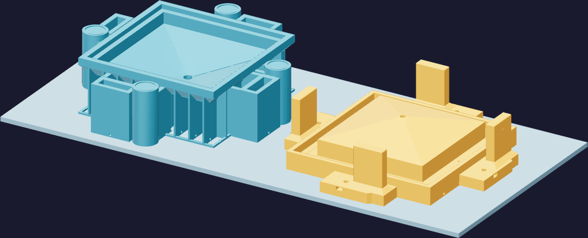

Print5
Set the printer
Open funnel-mold-guided-vacuum-petg-08-016.3mf in Bambu Studio. It already carries three sliced plates, the printer's Z trim and the speed modifiers. You are confirming the machine matches it, not re-deciding it.
| Setting | Value | Setting | Value |
|---|---|---|---|
| Machine | H2C | Layer height | 0.16 mm |
| Nozzle | 0.8 mm Standard, LEFT | First layer | 0.30 mm |
| Filament | PETG Translucent, Left Extruder (1) | Walls | 4 × 0.80 mm |
| Nozzle temp | 255 °C | Infill | 100 % |
| Plate | Textured PEI, 70 °C | Supports | off |

The two speed modifiers
Each large plate carries a modifier volume named Forming faces, registration and hardware fits. Inside it the outer wall drops from 100 to 30 mm/s. It covers the forming skins, the registration lands, the rod boss, the guide blades and bearings, the nut seats and the washer pockets. The exposed backing ribs stay fast. Do not flatten it to one speed to save an hour.
Confirm, then go
If Studio asks to group filaments, keep Custom with PETG on Left Extruder (1).
Re-confirm the 0.8 mm Standard nozzle after any hardware sync. Re-slice only if you
change the printer, nozzle, trim, filament, geometry or the finishing allowance.
⚠ The plate is hot and the job is long
Textured PEI at 70 °C for 37 hours. Leave the enclosure closed while it runs, and let
each plate cool on the bed before you lift anything off it.